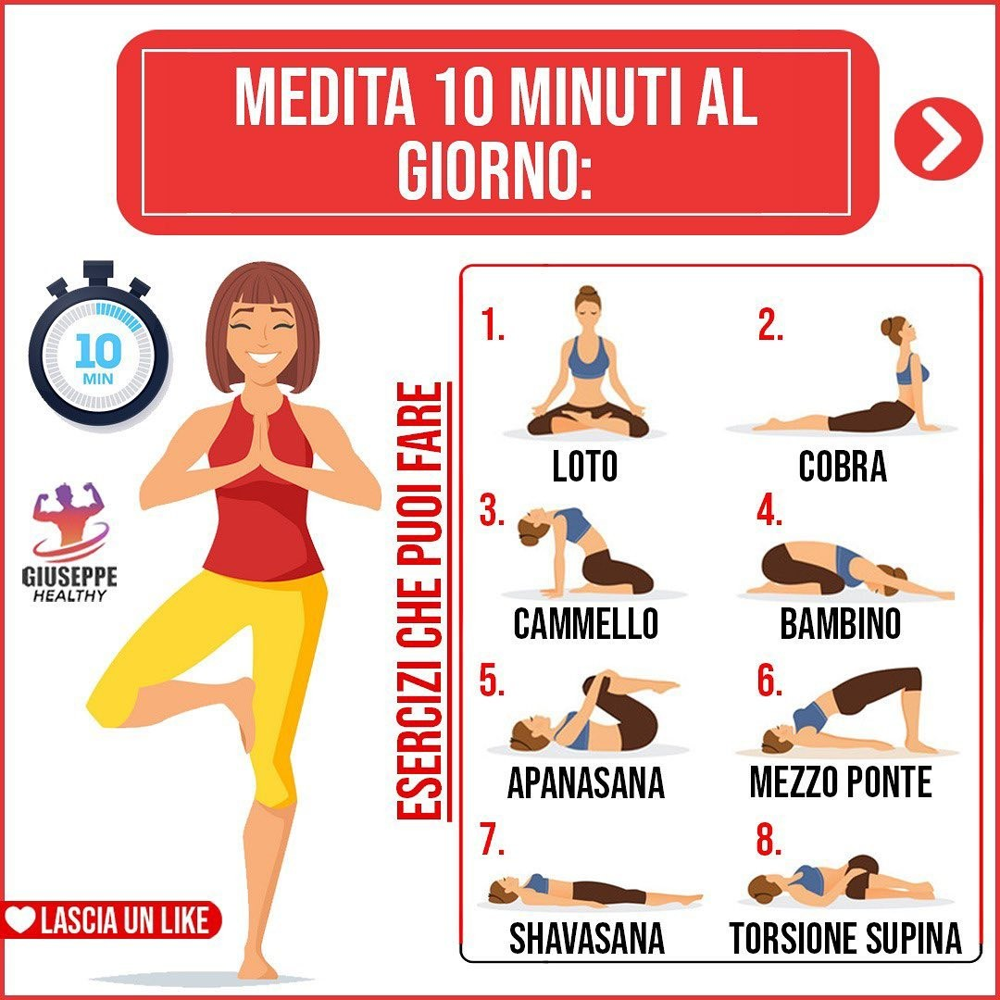
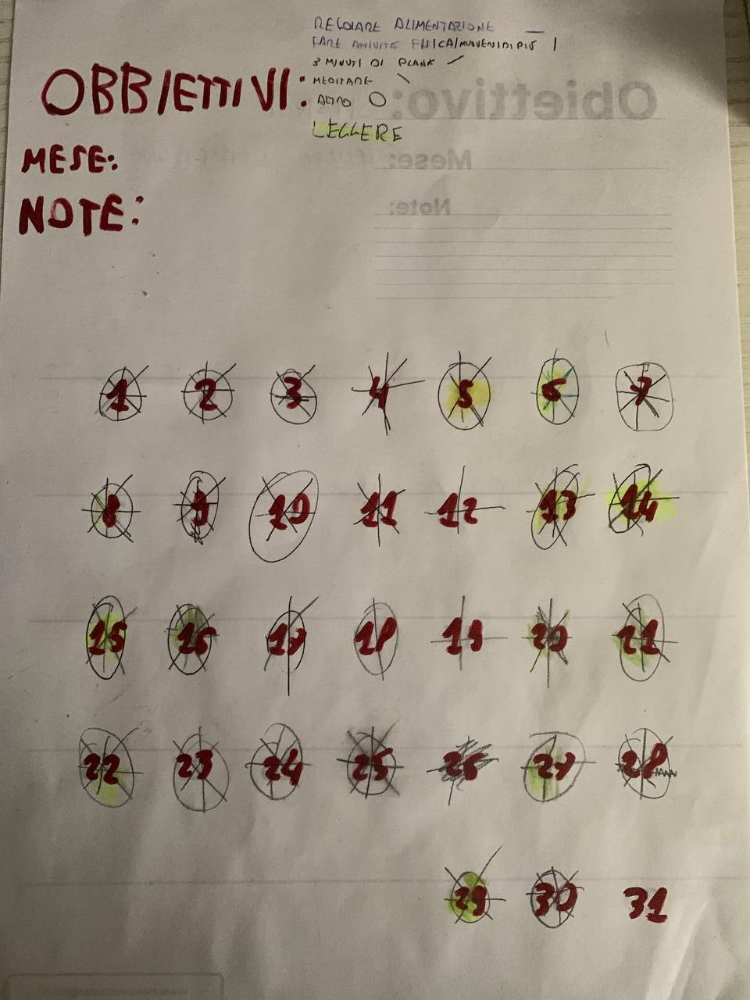

Premessa
Sono sempre stato un ragazzo che, nel bene o nel male, ha sempre cercato di fare attivit√† fisica e di muoversi il più possibile, nonostante abbia passato periodi dove la parola pigrizia erano all’ordine del giorno.
Ma è da un pò di tempo di tempo che, nonostante tutti gli sforzi, mi sono abbastanza lasciato andare, in particolare con un dei miei vizi: il mangiare e bere schifezze.
S√¨ perch√© bisogna anche dirlo. Nonostante sia una persona che ha trovato nella palestra e nell’attivit√† fisica la sua principale valvola di sfogo, ho sempre avuto un rapporto quasi ossessivo con tutto quello che potevo chiamare ‚ÄúComfort food‚Äù, a tal punto di passare anche giorni interi a mangiare qualsiasi tipo di schifezza.
All’inizio tutta questa situazione mi poteva andare bene ma, col passare dei mesi, le conseguenze cominciarono a farsi sentire: mi sentivo sempre gonfio,arrivavo a fine giornata che non avevo più forze e (paradossalmente) piano piano stavo tornando sempre di più ad isolarmi nel mio mondo. Ormai stavo rivivendo tutti quei sentimenti che mi avevano portato ad una dispiacevole situazione un paio d’anni fa e, ricordandomi ancora in modo lucido tutto quello che avevo passato, decisi di partire in anticipo e di fare qualcosa per non rivivere di nuovo quel periodo e, l’unica cosa che mi √® venuta in mente, √® il mettermi alla sfida per tutto il mese di novembre in una sfida che comprendeva molte sfere della mia vita
in cosa consisteva questa Sfida
La mia sfida di novembre, che stupidamente si pu√≤ chiamare SNC (Sport November Challenge)(si… non guidicate grazie), e stata creata utilizzando come punto di riferimento dei post di che mi ero salvato tempo fa di giuseppe_healthy, una pagina instagram che parla di fitness e dieta, e si divideva in 3 macro categorie:
-
- Allenamento
- Fare attività fisica almeno ¾ volte a settimana
- Muoviti di più durante il giorno
- 3 minuti di plank al giorno
-
- Alimentazione
- Bevi almeno 3 litri d’acqua al giorno
- Evita alcol e bevande zuccherate
- Consuma molta frutta e verdura
- Monitora l’assunzione di zuccheri, carni grasse e merendine
- azzera l’assunzione di caffeina, taurina e Monster
-
- Altro
- Dormire almeno 8 ore
- Svegliarsi presto al mattino
- Medita 10 minuti al giorno
- Leggere un libro

Svolgimento
Cos√¨, il primo novembre, √® cominciata la mia sfida personale. Lo devo ammettere i primi giorni, soprattutto a livello alimentazione, √® stata un odissea. Da persona che si era abituata ad un alimentazione casalinga ricca di cioccolato, cereali, salatini e bevande iper zuccherate, la diminuzione drastica di questi alimenti ed il trasferimento ad una dieta più sana ha portato, almeno all’inizio, ad avere continui attacchi di fame durante la giornata, in particolare durante le ore pomeridiane.
L’allenamento, invece, √® stata un operazione molto più progressiva del cibo. abituato ad andare in montagna il fine settimana √® stato abbastanza facile prendere l’abitudine di fare una passeggiata di 30 minuti o 1 ora al giorno. i 3 minuti di plank all’inizio sono stati sfiancanti e le prime volte a malapena riuscivo ad arrivare al minuto e trenta per√≤, grazie alla continuit√† e alla palestra, piano piano sono riuscito ad arrivare ai due minuti e mezzo (30 secondi di esercizio per 5 volte con 30 secondi di pausa per volta).
In palestra ci andavo gi√† da 8 mesi, quindi il mio corpo era gi√† bene o male abituato allo sforzo,ma dopo due settimane dove continuavo ad andare 2 volte a settimana ho cominciato ad andarci per 3 volte (2 mattine, 1 pomeriggio) e ho cominciato a farmi seguire di più quando facevo esercizi con le macchine. √à stato sfiancante, per quanto inizialmente non mi √® sembrato cos√¨ sfiancante l’aumento di giornate ora come ora capita di arrivare a casa la sera fisicamente stanco e stremato.
La difficoltà principale è stata nei 10 minuti di meditazione. Pensavo di essere abituato, dato che dal 2021 faccio Yoga 1 volta a settimana, ma mi sono reso conto solo in sto mese quanto il mio corpo non si è abituato a meditare in modo continuo, anzi a fine mese devo ammettere che alcuni giorni ho bellamente saltato.
Conclusioni
So che giunti a sto punto tutto questo sembra una cagata pazzesca, che l’unica cosa che vi sta passando per la testa √®; ‚ÄúOk, gi√† hai spiegato (male) quello che hai fatto, per√≤ cosa centra sto titolo?‚Äù. Mi fa strano dirlo ma, al di fuori da tutte le mie aspettative, sta cosa mi √® servita più mentalmente che fisicamente. Le uniche differenze che posso avvertire a livello fisico √® che ho smesso di sentirmi gonfio per la maggior parte della giornata e mi sento più carico di energie rispetto a prima, per√≤ il vero cambiamento √® stato dentro la mia testa.
La SNC mi è servita. Mi è servita per riuscire a portare un pò di pace e tranquillità nella mia testa. Ogni volta che ero frustato o appesantito da un qualsiasi pensiero, bastava allenarsi che cominciavo subito a sentirmi più leggero, più rilassato, e riuscivo lucidamente a ragionare.
Oltre al ruolo della valvola di sfogo, mi ha permesso di capire quali atteggiamenti ormai presenti nelle mie abitudini stavano diventando degli atteggiamenti tossici sia per me, sia per la mia salute, sia per quelli che avevo attorno. Ho cominciato a capire di cosa ho bisogno attorno e di cosa posso farne a meno, cominciando così a togliere dalla mia vita tutte quelle cose tossiche che dovevo togliere già tempo fa ma che prima non riuscivo a vedere.
La SNC mi ha fatto aprire gli occhi su di me, su di quanto mi sentissi solo e che, nonostante tutti i paroloni che facevo (‚ÄúIo non soffro di solitudine…. io la solitudine la so gestire…..‚Äù), in verit√† soffro pesantemente di solitudine, e che la maggior parte delle cose che ho fatto non le facevo perch√© avevo voglia di farle, ma perch√© mi sentivo talmente solo che tutte le altre attivit√† le facevo non per migliorarmi o acculturarmi, ma semplicemente perch√© non volevo sentirmi solo.
Alla fine, la SNC mi √® servita veramente, e non per mettermi in forma, perch√© mi ha aiutato veramente ad aprire gli occhi, a capire le cose che avevo attorno. Mi ha aiutato a capire che certi cibi dovrei limitarli, mi ha aiutato a capire che l’allenamento √® una grande valvola di sfogo, che al mio corpo non bastano due giorni a settimana per far fuoriuscire tutto quello che mi porto dentro. Mi ha aiutato a capire che, se voglio migliorarmi, devo cominciare a migliorare la mia salute mentale, che devo cominciare a fare realmente quello che sento mio, e che devo cominciare ad affrontare la solitudine che ho attorno, piuttosto che rifugiarmi in progetti che mi rubano solo tempo ed energia, non dando nient’altro.
Quindi grazie me di un mese fa che ha deciso di fare questa “Challenge”, in fondo ne sentivi veramente il bisogno.

Recensione "Filosofia Giapponese, 4 libri in 1 Ikigai, Kaizen, Shinrin-yoku, Kintsukuroi"
Wrapped 2023 (anche detto il meglio del 2023)
üìî Senza Meta